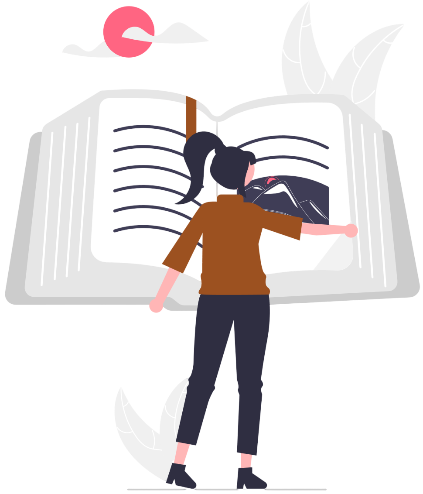

Sobre nós

Somos apaixonados por livros — novos, usados, raros e com histórias além das páginas. Criamos o Sebo Digital para conectar leitores de todo o Brasil com obras incríveis, a preços acessíveis, de forma prática e sustentável.
Aqui, cada livro tem uma trajetória: já fez parte da estante de alguém, já inspirou, emocionou, e agora pode continuar sua jornada com você. Acreditamos no poder da leitura e na magia dos livros compartilhados.
Nosso objetivo é facilitar o acesso à leitura, promover o reuso consciente e manter viva a cultura dos sebos — agora no ambiente digital, sem perder o charme e o cuidado de um atendimento humanizado.